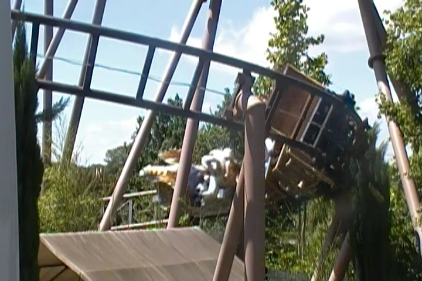
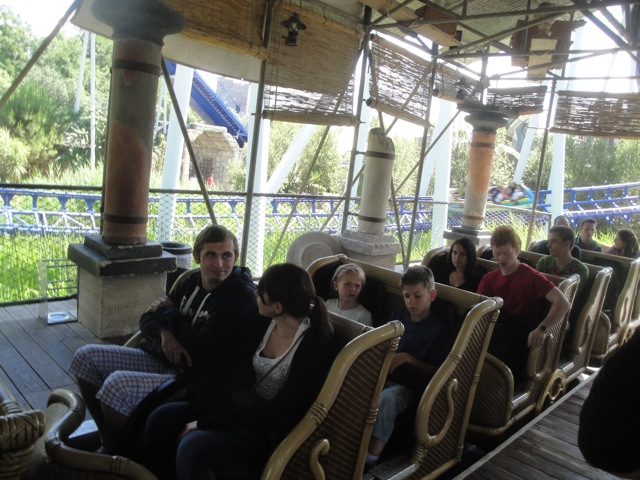
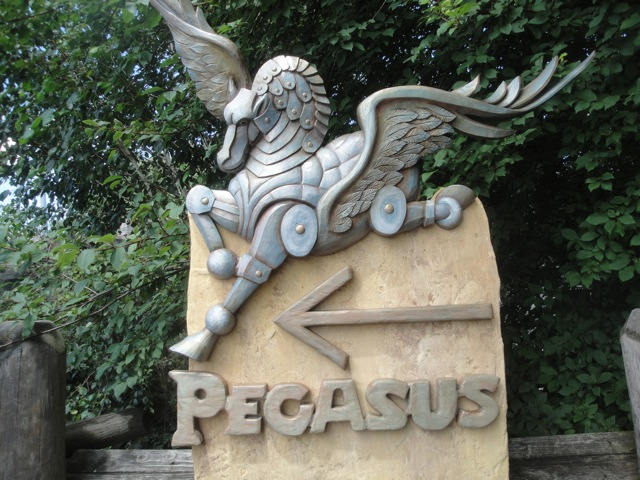

| |
Pegasus Review

We're here at Europa Park where's we'll be revewing Pegasus. One of the Mack Young Star coasters. You know that fuzzy blurry line of where a coaster stops being a kiddy coaster and starts being full sized family coaster? This is that line. This is where a coaster stops being a kiddy coaster. Yes, I like Roller Skaters, but I still consider them to be kiddy coasters. Yes, even the Big Models. Still count. But not this. This is where it becomes family coaster size and is a decent speed. All right. We get in the cars, pull down the lap bar, and we're off. We go around some turns, and them head up the lift hill. It's not huge, but it's big enough to be above a kiddy coaster. We dip, turn, and head down the first drop. Wee. We go under a statue and then head up a turn around. It's fun and has some laterals before dipping back down. We then go around a turn and then head into a downward helix. Hey, it's still fun. We then head down a small dip before we head around a couple low to the ground turns before gliding into the brake run. And yeah, the best way for me to describe Pegasus and the Young Star coasters is that they're like the super sized version of the super sized Roller Skater. It's not an amazing ride or anything, but it is still just a fun and enjoyable ride.
5/10
Location: Europa Park
Opened: 2006
Built by: Mack
Last Ridden: June 25, 2012
Pegasus Photos


Home
|